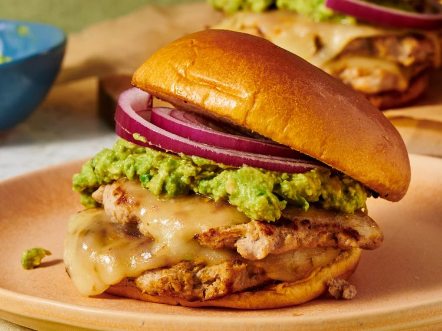

Southwestern Turkey Smash Burgers

Description
These Southwest smashed turkey burgers feature thin, deeply browned turkey patties
flavored with Hatch green chiles and warm spices, layered with melted Pepper Jack cheese.
Creamy lime-spiked avocado and crisp red onion add a fresh finish to these boldly flavored burgers.
Ingredients
- 3 pounds ground turkey with dark meat included
- 1 small red onion, halved
- 4 ounces diced hatch green chiles
- 1/4 teaspoon garlic powder
- 1/2 teaspoon chili powder
- 1/2 teaspoon cumin
- 3/4 teaspoon kosher salt, divided
- 1/2 teaspoon pepper
- 2 tablespoons olive oil, plus more as needed
- 4 burger buns
- 6 slices Pepperjack cheese
- 1 avocado
- 1/2 lime, juiced
Steps
- Place turkey in a bowl. Grate half of the red onion, about 2 tablespoons, and add it to the bowl. Slice remaining red onion thinly and set aside for topping.
- Add chiles, garlic powder, chili powder, cumin, 1/2 teaspoon salt, and pepper and mix until well combined.
- Working in batches of two or four, heat oil in a large nonstick or cast iron skillet over medium-high heat.
Spoon 8 golf-ball size portions of the turkey mixture into the hot skillet. Use the bottom of a small spatula
coated with cooking spray to lightly smash and spread the burgers to a 1/2-inch thickness. Cook, undisturbed,
about 3 minutes or until browned around the edges.
- Flip the burgers and continue cooking until cooked through, about 2 minutes longer. Top half of tenders with one slice of cheese and the other burgers with half of a
slice of cheese. Place one patty on top of the other and remove from the pan.
- Toast they cut sides of the bun in the pan drippings. Place the stacked burgers on the buns.
- Scoop the avocado into a small bowl and mash it with a fork until creamy. Stir in lime and remaining salt. Top burgers with smashed avocado mixture and sliced red onions.
HOME